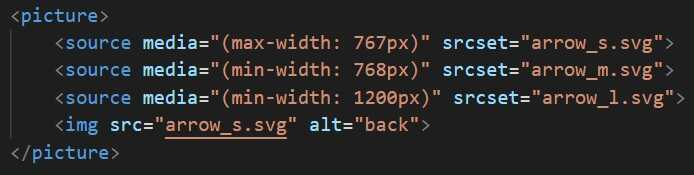
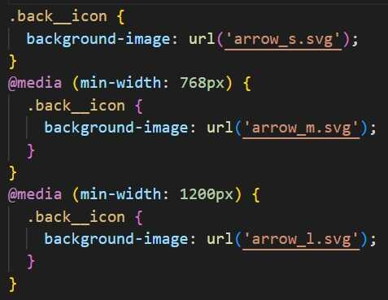
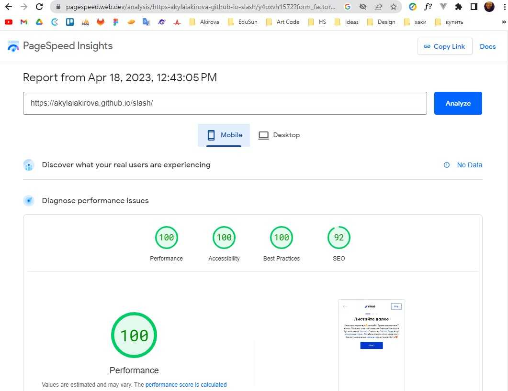

Доброго времени суток, Очень красивый дизайн! Спасибо, было приятно с ним работать. Мне хотелось бы прокомментировать свою работу.
Кнопка назад в дизайне взависимости от ширины устройства выполнена тремя разными иконками. Не размер меняется, а сами иконки. При этом когда кнопка назад недоступна она окрашивается совсем в другой цвет. Не прозрачность ее меняется, а она полностью окрашивается в другой цвет.
В данном случае чтобы менять взависимости от состоянии кнопки цвет (fill или stroke) иконки классно использовать svg и я бы так и сделала если бы иконки были одинаковые. Но они абсолютно разные и следовательно нужно подгружать разные изображения. Это можно сделать с помощью медиазапросов в стилях или тегом picture в html. Например:
или
при подключении таким способом у нас в действительности подружаются разные изображения, но теперь чтобы менять их цвет нам остается лишь применить css свойство filter. Например: .back__icon.disable { filter: invert(100%) hue-rotate(200deg); } В этом примере мы используем фильтр invert() для изменения цвета из черного на белый, а затем фильтр hue-rotate() для изменения оттенка на нужный цвет. Угол 200deg в hue-rotate() соответствует оттенку цвета #98ABD9 в цветовом круге. Но на сегодняшний день данное css свойство не поддерживает opera mini и ie, то есть наша верстка не будет кроссбраузерной и поскольку светло серый на данной иконке не мега сильно отличается от цвета #98ABD9 я бы применила opacity. Но это тогда уже не pixel perfect, зато максимально приближенно и практично.
В задании сказано в точь в точь реализовать все как есть и я на разные состояния подгружаю разные иконки но теперь perfomance будет не оченьский и показали google page speed будут не великолепными. Но таким образом есть pixel perfect.
Мне кажется для идеальной верстки верстальщику и дизайнеру временами нужно договариваться и находить способы для сохранения высокой скорости загрузки страницы и той красоты которую дизайнеру с трепетом и любовью хочется передать всем нам - пользователям.
Мне понравилось создавать данную страницу, мне нравится Ваше дело, Вы приносите радость людям позволяя им сэкономить. Мне очень хочется присоединится к Вашей команде 🙌 и создавать красивые, удобные интерфейсы
Я не добавляла теги для seo, поэтому тут такой процент. В рабочих проектах я буду спрашивать содержимое этих тегов и они у нас будут!